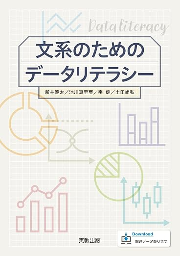

2026–2 · STATISTICS B2026年度後期 · 統計学B
Find the
pattern.ばらつきから、
答えを探す。
Start with observations. Learn to describe uncertainty, make an estimate, test a claim, and explain a relationship with data.観測から始め、ばらつきを読み、推定し、検定し、データで関係を説明する力を身につけます。
THE STATISTICAL ROUTE統計学の道筋
COURSE GUIDE授業ガイド
Use the data.
Show the thinking.データを使い、
考え方を示す。
This site keeps the week’s idea, preparation, and every course file together. Begin with the primary deck, use practice materials in class, then choose supplementary Yoh resources when you need another explanation or more exercises.このサイトでは、毎週のテーマ、準備、授業資料を一か所にまとめています。まず基本スライドを開き、演習資料で手を動かし、さらに説明や問題が必要なときはYoh資料を使いましょう。
01 / BEFORE CLASS01 / 授業前
Arrive ready to calculate.計算できる準備をして来る。
Bring your computer and calculator. Open the week’s preparation note and make sure Excel works before a data activity.PCと電卓を持参してください。準備を読み、データ演習の前にExcelが使えることを確認しましょう。
02 / IN CLASS02 / 授業中
Move between idea and evidence.考え方と証拠を往復する。
Use Tsumura's lecture slides as the common route. Work through the tables, data, and activities rather than treating statistics as formulas to memorise.津村先生の講義スライドを共通の道筋として使い、公式を暗記するだけでなく、表・データ・演習を通して考えます。
03 / AFTER CLASS03 / 授業後
Rebuild one step yourself.一つの手順を自分で再現する。
Reopen the PDF, solve a practice item without the answer, and use the archive decks only where they add a useful second explanation.PDFを開き直し、解答を見ずに演習問題を解きます。Yoh資料は、別の説明が必要なときに使いましょう。
THE MATERIALS SYSTEM資料の見方
One week.
One clear route.一つの週に、
一つの明確な道筋。
START HEREまずはここから
Tsumura's 2026 PowerPoint and its matched PDF. Preview the PDF, download the PowerPoint when you need it.津村先生の2026年PowerPointと対応PDF。PDFでプレビューし、必要に応じてPowerPointをダウンロードします。
HOMEWORK課題
Each week’s Tsumura exercises, active-learning worksheets, answer keys, and supporting data.各週の津村先生の課題、アクティブ・ラーニング用ワークシート、解答、補助データです。
GO FURTHERさらに学ぶ
Yoh’s original 2025 decks and references. Useful for overlap, recap, and another worked route through the topic.Yoh先生のオリジナルの2025年資料。復習、重なる内容、別の説明が必要なときに使います。

REQUIRED TEXTBOOK必修テキスト
Data Literacy for Liberal-Arts Students文系のためのデータリテラシー
Use this book as the reference alongside the weekly Tsumura slides. The map below makes clear what is taught as a main Statistics B topic and what is useful supporting reading.毎週の津村先生のスライドとあわせて、この教科書を参照してください。以下の対応表では、統計学Bで中心的に扱う内容と、補助的な読み物として役立つ内容を分けて示しています。
TEXTBOOK MAP教科書と授業の対応
Find the chapter behind each week.毎週の授業に対応する章を見つける。
Direct means the topic is a main part of that week’s Tsumura slides. Supporting marks a helpful connection, but not a separately taught Statistics B week.中心は、その週の津村先生のスライドで主に扱う内容です。関連・補助は役立つつながりですが、統計学Bで独立して扱う週ではありません。
Course setup; no assigned textbook section.授業の導入。指定節なし。
Foundations of inferential statistics推測統計学の基礎
Probability distributions: discrete確率分布：離散型
Continuous distributions: normal / standard normal, then sampling, t, and chi-square連続型分布：正規・標準正規、続いて標本・t・カイ二乗
Interval estimation of population mean and variance母平均・母分散の区間推定
Hypothesis testing, including two-group examples仮説検定（2群の事例を含む）
Regression, a testing-process review, and incorrect interpretations回帰分析・検定手順の確認・誤った解釈
Exam preparation across the directly covered material中心的に扱った範囲の試験対策
Final examination across the directly covered material中心的に扱った範囲の期末試験
CHAPTER 1第1章
Descriptive Statistics記述統計学Supporting foundations; Sec. 7 is direct in Week 12.関連・補助。第7節は第12週で中心的に扱います。
- Types of statistical data統計データの種類
- Cross-tabulation as descriptive statistical analysis記述統計分析としてのクロス集計
- What is a normal distribution?正規分布とは
- Values that show the centre of dataデータの中心を示す値
- Values that show the spread of dataデータの散らばりを示す値
- Scatterplots and correlation coefficients散布図と相関係数
- Regression analysis and other major analytical methods回帰分析とその他の代表的な分析手法
- Graphical representations of statistical data統計データのグラフ表現
CHAPTER 2第2章
Inferential Statistics推測統計学The core Statistics B sequence: Weeks 01–11.統計学Bの中心的な流れ：第1週〜第11週。
- Foundations of inferential statistics推測統計学の基礎
- Probability distributions確率分布
- Interval estimation of population mean and population variance母平均の区間推定・母分散の区間推定
- Statistical hypothesis testing統計的仮説検定
CHAPTER 3第3章
Analysis Cases分析事例Application reading; Sec. 5 connects directly to Week 12.応用的な読み物。第5節は第12週に直接つながります。
- Analysis case ①: descriptive statistics and cross-tabulation分析事例① 記述統計とクロス集計
- Analysis case ②: scatterplots and correlation coefficients分析事例② 散布図と相関係数
- Analysis case ③: tests of two groups分析事例③ ２群の検定
- Analysis case ④: regression analysis分析事例④ 回帰分析
- Incorrect interpretations of analysis results分析結果の誤った解釈
READY FOR THE WEEK?今週の準備はできていますか？Open the agenda. Find your route.授業予定を開き、今週の道筋を確認する。GO TO AGENDA授業予定へ →